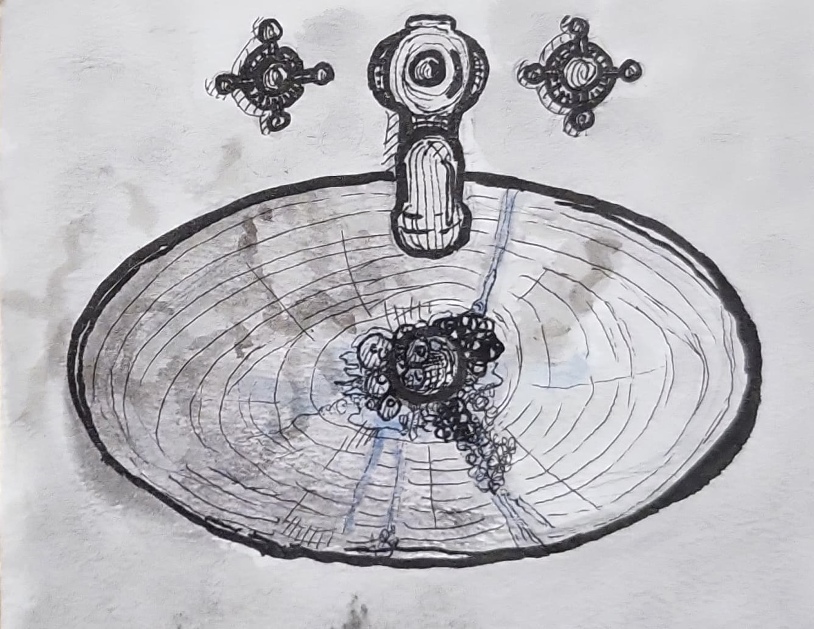
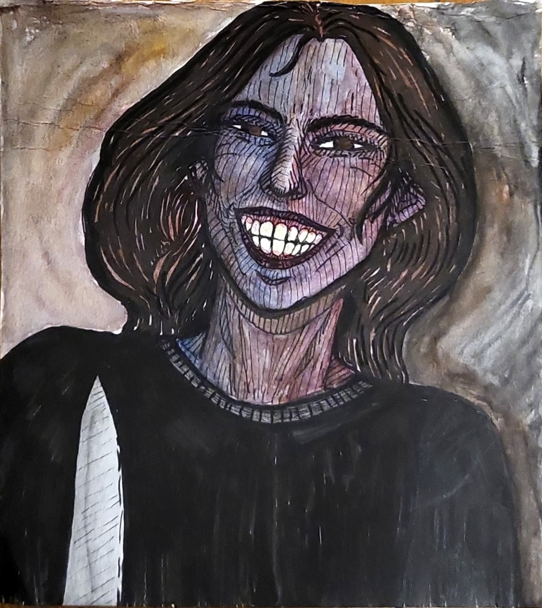

“What’s wrong, cariño? You haven’t touched your food.”
I scrunched my nose from the timbre of her voice. It irked me, and I couldn’t place my finger on why.
I was supposed to be thankful that it was sweet, that they weren’t beating me up or starving me. Instead, they were feeding me arroz con mole and smiling at me as if I were their daughter.
My finger landed on a reason for the irritation: her voice was sickly sweet. I imagined an old witch’s fingers gripping a paper bag tightly, pouring heaps of sugar into a mixing bowl: simply another ingredient in the treats for Hansel and Gretel.
In excess, sugar becomes a lure, forcing what was once sweet on the tongue into bitterness. People say you can never be too nice. But there’s a point in which you wonder if the kindness is genuine. If the nice words and gestures are all just part of a mask to obscure something rotting—a corpse beneath the floorboards.
Sometimes I can peek underneath as the boards raise themselves, its constructed barebones nature made clear through the rusted nails becoming the teeth of a gaping mouth.
Sometimes the facade falls apart on its own through contradiction. “I’m just…not hungry,” I muttered. And it was true. How could I be hungry in this place? In this skin?
My stomach panged as if in protest but my tongue held no cravings so I kept it locked up.
“Well, you need to eat something,” she started, and I could sense her looking at me, drilling her eyes into the top of my head. “Hmm, or else you’ll die!” She tittered from what she considered to be a joke, but I didn’t.
And I didn’t dare look up for fear of catching sight of that demented grin of hers. If only she knew that I was already practically dead.
A sequence of three knocks sounded out from the front door. “Ah, I’ll get that.” She got out of her chair and ran to the door.
I heard the door creak open followed by a gruff voice. “Señorita Rosa, how is your daughter doing? I heard that she is sick.”
“Ay, she won’t eat.” The woman’s voice bore a frustrated tone.
I glanced at the peanut gallery surrounding me: a young man in his twenties who sort of had my eyes—almond-shaped and rimmed with long, dark eyelashes; a similarly aged woman who seemed to be his wife by the way she was looking at him every now and then with her hand cupping the side of her face, ring finger encrusted with diamonds; and a middle-aged man who had my bushy eyebrows and long neck. They all donned the same rigid smile, as if it was copied and pasted onto each of their faces. Occasionally, they would look at each other and comment on my appearance.
“She’s gaining weight, don’t you think, Papá?” “She looks much better with her hair long. I don’t know why she ever cut it in the first place.” “She’s finally wearing some decent clothes today. None of that tomboy shit.” I grimaced beneath my mask.
I heard the man at the door tsk, and could imagine him shaking his head in either disappointment or disapproval. It was probably directed towards me. In my nearly twenty years of existence, it usually was. There was a familiar contour of him in my mind—short and stocky with a jaw that was freshly shaven. He had eyes the color of cinnamon and hair almost black but not quite. It revealed its brown nature under the sun, like the darkest of coffee beans. I knew all this just from the voice, but he was just a stranger too. Catching his aftershave as it wafted across rooms, my nose twitched with irritation. I heard the voices drop to whispers, little rustles at the edge of a forest I was in the middle of. I stretched my ear open, as far as it could go, and made out a few phrases: “I don’t know what happened” and “she used to be so well-behaved.” Their conversation burned a hole in the pit of my stomach, made my eyebrows furrow. What the hell did they know about me?
I stayed like this, in this vitriolic state, for who knows how long.
I first knew something was wrong with me when I was four. It was the middle of the night, and I was barefoot in the bathroom, my hands entangled beneath the warm tap water as I washed the last of the suds off. As I looked up from the bubbles snaking their way down the sides of the basin and to the drain, I saw my reflection in the mirror contort itself into a smile without my permission. As I slowly stepped backwards, I couldn’t place my finger on what exactly was wrong besides that smile, but she didn’t look like me.

When I snapped out of it, I noticed that she was sitting beside me again. I noticed from the shape of her legs pressed against the legs of the dining chair next to me. They bounced up and down, but stopped once I showed signs of life. “I was waiting for you to awaken.” She clutched my chin. “Your smile is still drooping. Let me fix that.” Her long, slender fingers reached out to mend the look on my face. Two fingers pulled at either side of my mouth, stretching the skin just enough to form a crescent shape. “There we go,” she hummed. “Now, how do I keep this in place?” The pressure lifted and my lips reestablished its resting frown. She held a finger up and bent her neck just enough so that I could see her maw. A shiver tiptoed its way down my spine and ran its nail along the vertebrae as I locked my gaze onto her grin. There was nothing glaringly off about it. No, it was a typical set of off-white teeth, all aligned and pressed tightly against one another. I watched her pry it open, and saw her tongue move as she spoke. “Wait here. I’ll be right back.” Perhaps it was the normality of it all that made it so disconcerting. Because how could she be so normal, so sickly sweet, so happy when I was in a stranger’s home with people who made me wear a woman’s skin?
Sigmund Freud mentioned the German word unheimlich in his writings on the uncanny. The familiar turned unfamiliar. Her, her smile, everything about her was unheimlich.
I saw the glint of the knife cutting through the air. I nearly yelped, but I had learned to keep my mouth shut all this time.
“Here we go, this’ll fix you right up.” I turned my face away, but she caught it within her tight grip. “Don’t move, mija.” Despite her stern tone, I kept trying to pull my face away. Twisting my neck in vain.
I heard my neck bones crack as she yanked my face in one swift motion. I met her eyes—a deep cacao brown like mine. Yet, they had no hint of warmth in them. Her gaze was icy cold. Her smile remained, however, as if it was a sticker on her face that she wore consistently. “I said, ‘Don’t. Move.’” At that moment, it was as if a cold, bony finger ran down the back of my head and along my spine before nipping at my heels. I was frozen from how sadistic she seemed. Practically inhuman.

I soon felt a burning sensation erupt at the corners of my mouth and it wasn’t long before I could taste the blood pooling on and around my teeth. A few tears escaped from my eyes, warm at the rims. I felt her thumb run across my tear-stained cheeks. “There you go,” she whispered. “Sensitive, just like a girl.” The knife clattered on the dining table, blood splattered all over its blade. It was strange to see my blood on display, like the knife was a menstrual pad soaked in the grisly fluid. I hadn’t had a period in a long time, though, and I didn’t plan on having one ever again. Just the sight of blood clots in my mind reminded me of the sour smell, the intensity of my cramps, and the way it would feel like a flood bursting through a dam. She opened me up again, cut into a vulnerable past I never imagined I’d return to. Back when I hated my body more than anything else in the world. So now, in the chill of the evening with the room dimly lit as the sun was setting just past the windows, she made me hate it again:
As you soaked up the blood with a cheap tissue, I winced,
Did you think you could ask for repentance by cleaning it up? I’m not convinced
that you learned from last time; ghost images of the wounds you gave me remain
from the act of you violently cutting against the grain,
praying that I would match your telepathic (tele)vision
and still you are now, to Dios you turned to cover me up with precision.
With a knife you carved your idea of happiness from ear to ear
before lowering a candle into the hollow cavity you scooped out, holding dear
the assumption that it would warm and illuminate, rather than melt me down
into an unrecognizable form, a crumpled hospital gown.
A tube of concealer, mascara wand, blush palette, and tube of lipstick
were all you needed to churn me sick:
Was it your intention to paint me in the style of Picasso and leave me distorted?
I was thwarted,
so once she turned her back to me, I dug my nails into the soft flesh above me and scratched, scratched, scratched until I could no longer feel its weight. It felt like summer of ‘23 when I decided that life was no longer worth living and I sliced myself open just for the EMTs to take me away, revive me, and shove me into a psychiatric facility to teach me some semblance of meaning. Or so they thought. All that did was make me realize that I didn’t want to slip up next time. No way was I ever going back to that facility—that gloomy place of pale blue gowns, yellow grippy socks, underseasoned bland food, and a whopping medical debt. It was life or death. No more in-betweens.
“Mija, I need your help with dinner.” She knocked on the door a few times before growing irritated. “I know you’re in there. Open up, Guadalupe. Ándale.”
A minute passed. I heard her foot tap impatiently and even saw its hyper silhouette dance across the threshold. Because of this, there was an inconsistency in how the light peeked through the gap below the door. It flickered across my face like strobe lights in a rave, only less harsh.
“Ay, en serio, Lupe—” She pushed my bedroom door open (god dammit, I forgot to lock it), only to find my limp body on the carpet, sprawled out like Jesus on the cross. My wrists were facing the ceiling, evidence of the crucifixion leaking out in the form of a dark crimson liquid. She gasped and collapsed to the floor beside me. “Oh God, oh God.
Dios mio, por favor no te lleves a mi hija.” I felt a fractal of guilt erupt across my belly as I heard her weep beside me. She fumbled for the phone in her pocket—an old Nokia she bought a decade ago—and dialed 911. Her pleas for help were bubbled up in snot, a funny contrast to the calm demeanor of the operator on the other end saying, “Ma'am, take a few deep breaths and stay with me.”
She was crying again as she held my wrist. “Why do you keep doing this to me?”
My fingers had burst through the leather, blood-soaked and g(r)asping for air.
I had finally given in and painted my nails red like the girls she always compared me to:
those niñas inhaling acetone as they brushed another thin rose coat on,
bonding with their mamás as they picked out dresses from pinterest they liked,
stealing lipstick from the bedroom down the hall
to see how it looked on their own faces,
with oversized high heels on their feet to bring them eye to eye with the mujeres.
She can’t say I never tried, porque
yo le di una hija, una Guadalupe muerta.
 As I walked away from the burning house, I was dead to her. She had been crying for days over the skin I shed. Crying and crying until her cheeks hurt. I always knew that she loved a ghost more than she loved me, so I left. How could she love someone she refused to know?
As I walked away from the burning house, I was dead to her. She had been crying for days over the skin I shed. Crying and crying until her cheeks hurt. I always knew that she loved a ghost more than she loved me, so I left. How could she love someone she refused to know?
Guadalupe gave birth to a baby boy named Jesus Christ when I was born. He was crucified, but he came back. He always did.
When I woke up, I was in bed with the comforter up to my neck. I felt the weight of skin again, uncomfortably warm and sticky against me. I turned my head and there she was again, mi mamá, stroking the side of my face tenderly.
How could I still love her? “I’m so glad you came back home, mija.”
I couldn’t feel her love because the skin wasn’t my own.
unfurled
the fiber zipper drops, leaving my flesh cut open and bare for the morning birds to eat.